The Social Kitchen
عرض تجريبي للمنيو التفاعلي · اختر النوع ثم الستايل
عرض تجريبي للمنيو التفاعلي · اختر النوع ثم الستايل
افتحها على التلفزيون أو الشاشة بملء الشاشة — تتبدل الأطباق وحدها
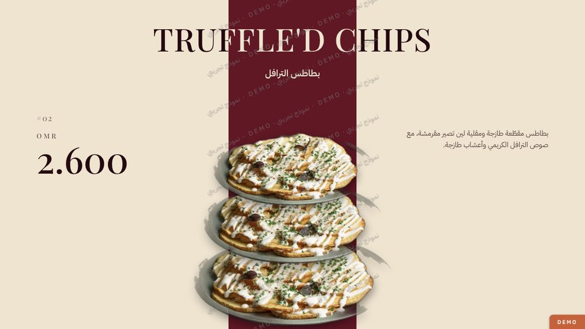
▶بطاقة مائلة وعنوان يُكتب حرفاً حرفاً، ثم عمود مكدّس من الأطباق
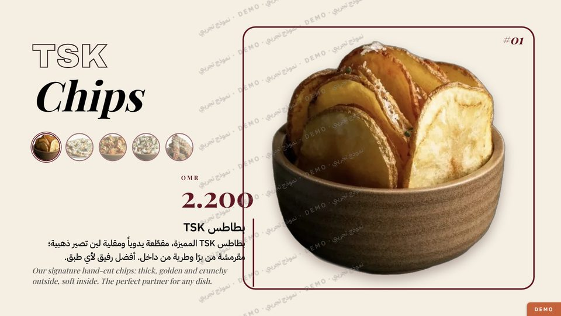
▶ملصق بإطارات ملونة، والطبق يتكبّر بعنوان ضخم عند الضغط
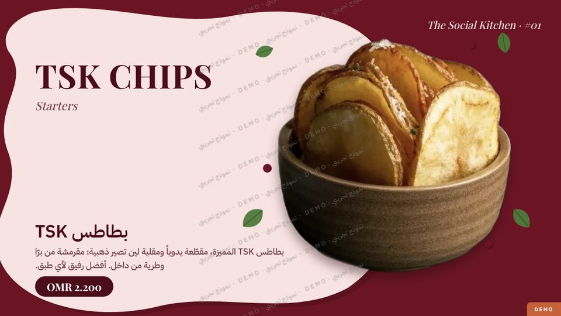
▶خلفية يتغيّر لونها مع كل طبق وأشكال ناعمة وأوراق تطفو
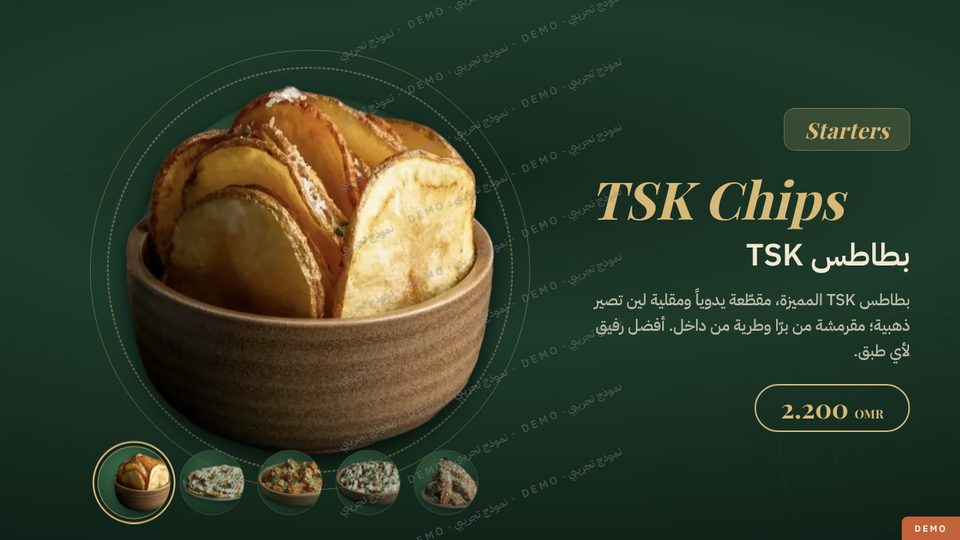
▶طبق كبير يدور ويتبدّل بنعومة، وأطباق صغيرة للاختيار
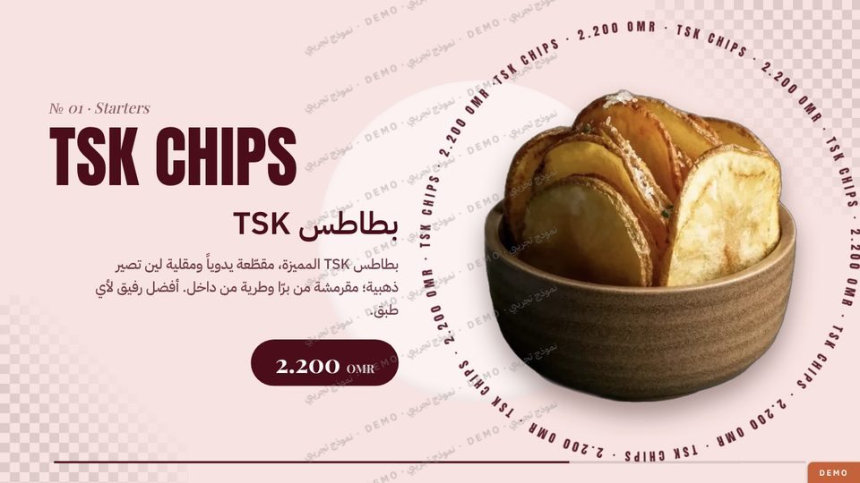
▶نص يدور حول الطبق وانتقال بموجة لون بين الأطباق
افتحها من الجوال، أو امسح الكود بكاميرا الجوال من هذه الشاشة
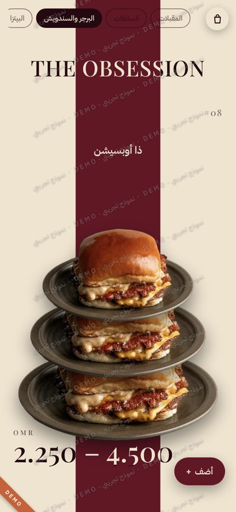
بطاقة مائلة وعنوان يُكتب حرفاً حرفاً، ثم عمود مكدّس من الأطباق
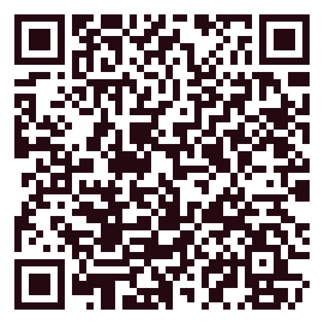
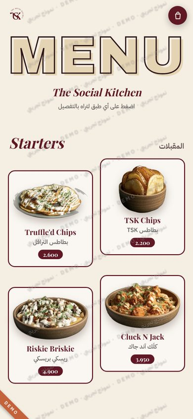
ملصق بإطارات ملونة، والطبق يتكبّر بعنوان ضخم عند الضغط
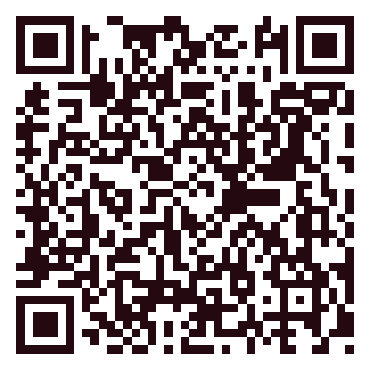
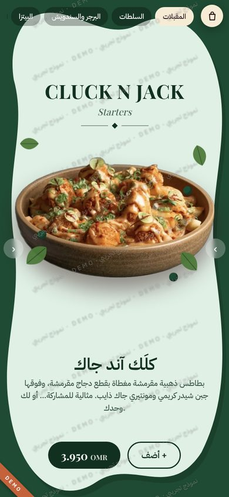
خلفية يتغيّر لونها مع كل طبق وأشكال ناعمة وأوراق تطفو
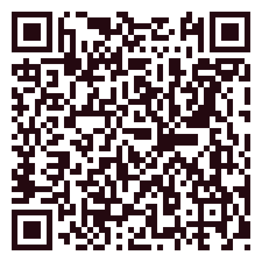
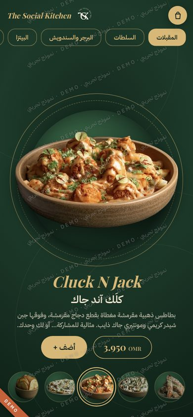
طبق كبير يدور ويتبدّل بنعومة، وأطباق صغيرة للاختيار
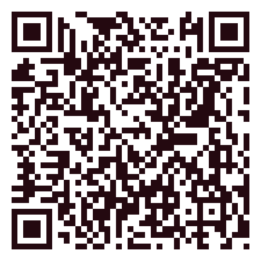